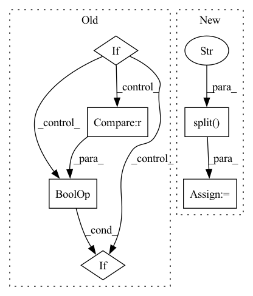

Pattern ID :33084

Before Change
new_ids, mp = pd.factorize(df[field])
self.inter_feat[field] = new_ids
self.field2id_token[field] = mp
elif source == "user" or source == "user_id":
pass
elif source == "item" or source == "item_id":
pass
// TODO
After Change
self._remap_ID_seq(fsource, field)
def _remap_ID(self, source, field):
feat_name = "{}_feat".format(source.split("_")[0])
feat = getattr(self, feat_name, pd.DataFrame(columns=[field]))
if source in ["user_id", "item_id"]:
df = pd.concat([self.inter_feat[field], feat[field]])
new_ids, mp = pd.factorize(df)
split_point = [len(self.inter_feat[field])]
self.inter_feat[field], feat[field] = np.split(new_ids, split_point)
self.field2id_token[field] = mp
In pattern: SUPERPATTERN
Frequency: 3
Non-data size: 6
Instances
Fragment ID: 95684660
Project Name: rucaibox/recbole
Commit Name: 17c3b1d7b15f95266ecbf72fdc1eff70c476c2fa
Time: 2020-07-19
Author: 297086016@qq.com
File Name: data/dataset.py
M Class Name: Dataset
N Class Name: Dataset
M Method Name: _remap_ID(3)
N Method Name: _remap_ID(3)
M Parent Class: object
N Parent Class: object
M File Name: data/dataset.py
N File Name: data/dataset.py
M Start Line: 132
M End Line: 140
N Start Line: 132
N End Line: 143
'>
Before Change
tag = "v5.0" // current release
name = file.name
if name in assets:
msg = f"{file} missing, try downloading from https://github.com/{repo}/releases/"
redundant = False // second download option
try: // GitHub
url = f"https://github.com/{repo}/releases/download/{tag}/{name}"
print(f"Downloading {url} to {file}...")
torch.hub.download_url_to_file(url, file)
assert file.exists() and file.stat().st_size > 1E6 // check
except Exception as e: // GCP
print(f"Download error: {e}")
assert redundant, "No secondary mirror"
url = f"https://storage.googleapis.com/{repo}/ckpt/{name}"
print(f"Downloading {url} to {file}...")
os.system(f"curl -L "{url}" -o "{file}" --retry 3 -C -") // curl download, retry and resume on fail
finally:
if not file.exists() or file.stat().st_size < 1E6: // check
file.unlink(missing_ok=True) // remove partial downloads
print(f"ERROR: Download failure: {msg}")
print("")
After Change
name = Path(urllib.parse.unquote(str(file))).name // decode "%2F" to "/" etc.
if str(file).startswith(("http:/", "https:/")): // download
url = str(file).replace(":/", "://") // Pathlib turns :// -> :/
name = name.split("?")[0] // parse authentication https://url.com/file.txt?auth...
safe_download(file=name, url=url, min_bytes=1E5)
return name
'>
Fragment ID: 95684646
Project Name: fcakyon/yolov5-pip
Commit Name: 5afe85ae36145f9f3b511b2918b51566b7296f5d
Time: 2021-06-22
Author: 34196005+fcakyon@users.noreply.github.com
File Name: yolov5/utils/google_utils.py
M Class Name: AnonimousClass
N Class Name: AnonimousClass
M Method Name: attempt_download(2)
N Method Name: attempt_download(2)
M Parent Class:
N Parent Class:
M File Name: yolov5/utils/google_utils.py
N File Name: yolov5/utils/google_utils.py
M Start Line: 21
M End Line: 59
N Start Line: 41
N End Line: 73
'>
Before Change
tag = "v5.0" // current release
name = file.name
if name in assets:
msg = f"{file} missing, try downloading from https://github.com/{repo}/releases/"
redundant = False // second download option
try: // GitHub
url = f"https://github.com/{repo}/releases/download/{tag}/{name}"
print(f"Downloading {url} to {file}...")
torch.hub.download_url_to_file(url, file)
assert file.exists() and file.stat().st_size > 1E6 // check
except Exception as e: // GCP
print(f"Download error: {e}")
assert redundant, "No secondary mirror"
url = f"https://storage.googleapis.com/{repo}/ckpt/{name}"
print(f"Downloading {url} to {file}...")
os.system(f"curl -L "{url}" -o "{file}" --retry 3 -C -") // curl download, retry and resume on fail
finally:
if not file.exists() or file.stat().st_size < 1E6: // check
file.unlink(missing_ok=True) // remove partial downloads
print(f"ERROR: Download failure: {msg}")
print("")
After Change
name = Path(urllib.parse.unquote(str(file))).name // decode "%2F" to "/" etc.
if str(file).startswith(("http:/", "https:/")): // download
url = str(file).replace(":/", "://") // Pathlib turns :// -> :/
name = name.split("?")[0] // parse authentication https://url.com/file.txt?auth...
safe_download(file=name, url=url, min_bytes=1E5)
return name
'>
Fragment ID: 95684649
Project Name: ultralytics/yolov5
Commit Name: f3c3d2ce5d85ba77336a9d0a87c6a446732cdda6
Time: 2021-06-08
Author: glenn.jocher@ultralytics.com
File Name: utils/google_utils.py
M Class Name: AnonimousClass
N Class Name: AnonimousClass
M Method Name: attempt_download(2)
N Method Name: attempt_download(2)
M Parent Class:
N Parent Class:
M File Name: utils/google_utils.py
N File Name: utils/google_utils.py
M Start Line: 21
M End Line: 59
N Start Line: 41
N End Line: 73